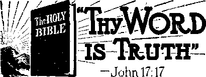
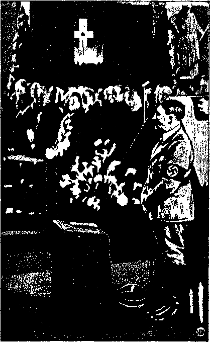
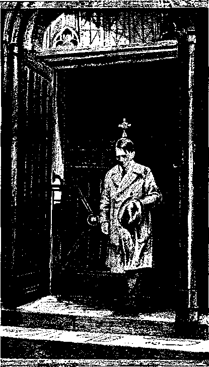
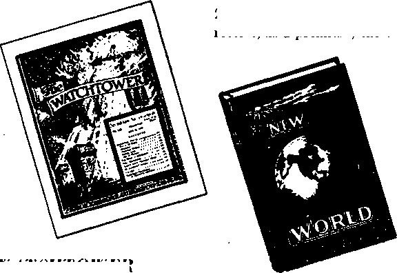

Jehovah’s witnesses Hold Constitutional Law 9 Lands and Peoples of Northwest Africa 10
Why the Cry of "Tunisia”, "Tunisia”
« Algeria an Integral Part of France
Butter Tree, Flour Tree, and Cheese Tree 15 "The Profit of the Earth Is for AH” 13 "Thy Word Is Truth”
The "Holy Roman Empire”
Common Aims of Nazis and Hierarchy 21 The "Church” and Hitler Remember
Hitler a Catholic in Good Standing
Condemned out of Their Own Mouths
Presenting “This Gospel of the Kingdom”
Features of The Emphatic Diaglott
Publl&he^ every other WpflneBd&y by WATCHTOWER BIBLE AND TRACT SOCIETYt INC, 117 Adams St,, Brooklyn. N. Y.T U. S. A.
Editor Clayton J. Woodworth
Business Manager Nathan H. Knorr
1 Five Cents a Copy
JI a year in the United States
Jl-25 to Canada and all other countries
NOTICE TO SUBSCRIBERS
Remittances: For your own safety, remit by postal or express money order. When coin or currency Is lost in the ordinary mails, there la no redress Remittances from countries other than those named b£iow may be made to the Brooklyn office, but only by International postal money order.
Receipt of a new or renewal subscription will be acknowledged only when requested. Notice of Expiration is sent with the journal one month before subscription expires- Please renew promptly to avoid loss of copies. Send change of address direct to us rather than to the prist office. Your request should reach us at least two weeks before the dale of issue with which it is to take effect. Send your old as well as the new address. Copies will not be forwarded by the post office to your new address unless extra postage is provided by you.
Published also in Greek, Portuguese, Spanish, and Ukrainian. •
OFFICES FOR OTHER COUNTRIES
England _ 34 Craven Terrace. Landon, W.2
Australia 7 Reresford Road, Strathfield, X’.S.W. South Africa 623 Boston House, Cape Town
Mexico Calzada de Melchor Ocampo 71. Mexico, D.F.
Brazil Caixa Postal 1319, Rio de Janeiro
Argentina Calle Honduras 5646-18, Buenos Aires Entered as second-class matter at Brooklyn, N. Y., under the Act of March 3. 1879.
Notandum
The Best Convention Report
♦ The Report 0/ the New World Theo. cratic Assembly of Jehovah's witnesses, September 18, 19, 20, 1942, just at hand, is, by all odds, the best report of any annual convention of Jehovah’s witnesses that has ever been published. And it is the most attractive. With pages 9" by 12" in size (the same as The Watchtower), the pictures, 82 of them, are generous in their proportions, and tell a great story in themselves.
Of special interest is the magnificent scene which goes to make up the front cover. A hand, as the hand of the great Creator, is revealed as opening the windows of heaven and pouring out upon Jehovah’s witnesses so many and so great blessings that they could not be contained. The blessings themselves'are shown: the Watchtower Bible; the October 1, 1942, issue of The Watchtower, containing the discourse on “The Only Light”; the new book, The New World; Kingdom Neivs No. 11, entitled “The People Have a Right to Good News Now”; the booklet Peace—Can It Last? and Organization Instructions, which instructions enable Jehovah’s strange work in the earth to he done in an orderly manner by the most orderly and obedient people on earth; and then the avalanche of thousands upon thousands of these new features that enabled the witnesses to make immediate use of them.
As in all the new books and booklets, provided by the Lord through the Society, only the name of Jehovah- God is j exalted in this report of the greatest convention of Jehovah’s people ever held on earth. It is known that 156,424 attended and that at least 4,992 were immersed. In every way this report is different and better than any that preceded it. No one that is of good-will toward God can read it without praise to Jehovah welling up within his heart.
“And in His name shall the nations hope.”—Matthew 12:21, A.R.V.
Volume XXIV Brooklyn, N. Y., Wednesday, February 3, 1.943 Number 610
School Hitlerism (Zn Two Parts—Part 1)
"The salute of the flag is an expression1 of the homage of the soul. To force it upon one who has conscientious scruples against giving it, is petty tyranny unworthy of the spirit of this Republic and forbidden, we think, by the fundamental law. This court will not countenance such tyranny but will use the power at its command to see that rights guaranteed by the fundamental law are respected.” —District Court of the United States, Southern District of West Virginia.
THERE has been much publicity about the enforcement of the flag salute in certain schools throughout the United States. On the other hand there is a total lack of publication as to the educational success of such schools. Some of Jehovah’s witnesses have now been refused an education on this ground for more than three years. What is accomplished thereby? Are the schools reaching new standards of excellence? Have their school methods and practices produced better Americans, well grounded in essential knowledge? It is now time to consider.
Publie Law 623, passed last June by the 77th Congress, expressly provides: "Civilians will always show full respect to the flag when the pledge is given by merely standing at attention.”1
Meanwhile some school authorities continue to bring unsavory attention to themselves by insisting on the salute, not lawfully required of civilians. Surely children are entitled to all the rights and immunities allowed to other civilians, especially to the inherent and constitutionally guaranteed right to worship God according to the dictates of the young conscience. Unprejudiced authorities would rejoice to see the child exercise that right. But unhappily there is a breed among our school potentates who find the Nazi methods more attractive than the American way of life. These are the little Hitlers of the schoolyard.
Among the tyrants of ail time no other is so des-p i c a b 1 e as the oppressor of the youthful conscience. It is painful to endure the ostracism of one’s schoolmates, but to suffer punishment at the hands of respected elders for that which is done for conscience’ sake is severe indeed. Let the minds of the adult return to his own school days and recall the little heartaches which racked so painfully. Pause for a moment and reflect as to how you would have endured chastisement for doing what you conscientiously believed to be God’s will. Such is the hardship courageously borne by little children who love the Lord.
School days are not the happiest times at best. The youngster must accommodate himself to discipline, sacrifice many yearnings, and obey without question. He must learn the difference between right and wrong. This is often hard, even though it may be explained to him that rules are for his benefit. To aid in this process of molding the young mind nothing else is so helpful as con-
fidence in and love of the teacher. How, then, can the school authorities gain respect from the child by forcing upon him that which is repugnant to his conscience? It is their duty to quicken this conscience and not to punish its Exercise.
Properly, then, the teacher becomes the j guide to right conduct and is looked up * to for instruction in nearly every phase of life; and the adolescent conscience is quickened not merely by “musts” and “must nots”, but by the example of the beloved ideal. For more than half his waking hours the student lives in this influence, which can be exerted mightily for his benefit,—Proverbs 22:6.
School thus grows to be a large part of the child's world. Those who people it have either his confidence or his distrust. He reasons about the conduct of others; and although he may accept unreasonable behavior, it is not without wonder, which may even recur in later years to be threshed out and the action condemned. Injustice is most likely to be bitterly remembered. •
Injustice comes now in its ugliest form: punishment for doing right. The whole framework of education built on confidence, respect and devotion collapses. The eminence of the child’s tutors is brought low, and nothing but contempt for such action, which will increase through the years, can result. Nor is the effect limited to the persecuted one, but spreads to all those who see it, and even beyond, to all who hear about ■it; little impressionable minds carrying a record of wrong for many generations.
Proper instruction, on the other hand, leads to “have always a conscience void of offence toward God, and toward men”. (Acts 24:16) What happens, then, from the attempt to force an improper conscience toward God and toward men? What occurs when in good conscience a boy or girl asks to be excused from the flag salute because he or she considers it against God’s law, and, without any attempt to prove the child’s reasoning incorrect, the principal or teacher says: “If you don’t salute you will be whipped or expelled” ? The child of faith remains firm. But there are'many others with a sense of justice who begin to wonder whether the voice of conscience is-the thing to listen to or not. The teachers have said so. But now a schoolmate is in trouble because he insists on doing what he thinks is right. Are any rules right after all?
The principles expounded by the educators are fine. In an abstract manner their reasoning is sound; in practical application they are found wanting. Take, for example, Springfield, Mass. A write-up in the Springfield Union eulogizes the schools of that city for their teaching the youth the fine art of good citizenship and democracy. It says, in part:
Gone are the days when democracy could thrive in the schools on perfunctory salutes to the flag and pictures of Washington crossing the Delaware. Democracy is fighting for its life. The schools know this and are doing something about it. They realize that their big job is to make democracy live. They must show what lies behind the flag and what it means to live in a democracy. America must be understood rather than accepted. . . . Students learn of the bitter struggles by which liberty was won in America and how it is imperiled by antidemocratic movements which are sweeping the world. “Be open-minded and get the facts,” is the lesson students are urged to learn. *
The actions of Springfield schools belie the above words. They tried to force perfunctory salutes from children who declined because of conscientious scruples based upon God’s law. They tried to force acceptance of what they call “democracy”, not understanding true democracy themselves. These arbitrary methods failing to break the faith and integrity of the children, they were expelled from school.
Another ■ principle not everywhere followed is that stated by a well-known educator, Wilford M. Aikin, in the New York Tinies. He says, in an article entitled “What’s Wrong with Our Schools?” that after prolonged study many teachers and principals have stated their convictions, one of them in the following phrase:
We believe that the mind and spirit of man should be free, that there should be no shackles upon intelligence or spirit, that all aspects of life, even the democratic ideal itself, ' shall be open to honest inquiry, discussion and criticism. For that reason the Bill of Rights was included in the Constitution. Mind and spirit can be free only where freedom of speech, press, assembly and worship are guaranteed.
Demoralization is sure to follow digression from God’s law. School boards even digress from the laws of the land in order to set up petty dictatorships over the pupils. The Nazi example, where each official metes out “justice” according to his own whim or caprice, becomes the practice. Besides expulsion, whippings and incited assaults by other children are resorted to. Here again appears the Nazi pattern, the weapon of tyrants of all ages. Certainly this conversion to Fascism gladdens the heart of Hitler, and gives his father the Devil much joy because the whole tendency is to reflect discredit upon Jehovah. But it should be no cause for joy to Americans.
All patriotic Americans agree with the words of former Supreme Court Justice Byrnes when he said:
We must by all means avoid developing among ourselves a Hitler-like contempt of other groups and ereeds and races. We want no Hitler justice here. We want no trials by axe-men instead of juries. We know the meaning of Equal Justice Under Law. We know the blessings of liberty. To preserve these we will give our all. God helping us.1
Mr. Byrnes himself did not live up to that fine declaration of American princi-
1 Speech before the Illinois Bar Association delivered in Chicago, June 4, 1942.
FEBRUARY 3, 1943 pies, because, four days later, he fell in with the majority decision, that famous five to four decision against freedom, permitting tax levies upon Bible truths? Many school boards also thus render lip service to the four freedoms, while they deny their enjoyment to children of a faith different from their own. This statement, of course, does not include the thousands of American schools that magnanimously recognize the right of Jehovah’s witnesses to worship the Lord according to conscience, and excuse them from the salute. But today the germ of Hitlerism is spreading to some of these.
The question now arises: Why do school authorities emphasize the salute, which can have but small importance in the realm of education ? Briefly answered, they prefer Nazism to Americanism, seeking to dominate without recourse for the victim; and hate the God of Jehovah’s witnesses. They exhibit all. the symptoms of the disease ravaging this country, suppression of free worship. In violating the Constitution and Federal Law 623 the schools have been aided and abetted by other groups, as we shall see later.
Related to the exaggerated emphasis upon the salute are other questions for most serious consideration by parents and educators of the United States, to wit: How do the achievements of the schools in the proper field of education compare with their zeal to destroy obedience to Jehovah? While doing homage to totalitarian methods is there a corresponding neglect of basic and moral instruction ? In the unhappy land of Nazism immorality is glorified. Are the American schools following suit?
2 The Chicago Tribune editorially regretted the appointment of Byrnes as director of economic stabilization because of his “concurrence as a member of a five to four majority in the Supreme Court in an opinion of the court last June which held, in the Jehovah’s witnesses eases, that vendors of religious books and pamphlets may be licensed and taxed, notwithstanding the constitutional guarantee of freedom of religion, speech, and the press”.
The Answer '
, Answering the foregoing questions Consolation submits several forms of evidence: statements of pupils themselves; the opinions of educators and professors of grade schools, high schools, and colleges ; quotations from civic and national , leaders and spokesmen; testimony of * police officials as to immorality; Catholic and, particularly, Jesuit objectives in education, and the results; and excerpts from the court records.
Consideration will be given to the points in the order mentioned. First, the statements by the pupils themselves. This is perhaps the least reliable evidence, as children are given too much to imagination and hearsay and then repeating it as a fact. But to round out the picture such information is offered.
A high-school girl of fifteen relates the following:
In my English class the other day, we were ■ conjugating verbs,, and one of the girls asked if "sit, sat, sut” was correct. The teacher asked how she would use "sut” in a sentence. The girl replied: “We have sut here for hours.’’
The class’and teacher both laughed, but there was no attempt made to correct this girl’s mistake.
While I read a great deal, and have acquired a vocabulary that way rather than at school, yet I have not learned to spell properly. Several years ago, in South Carolina, we learned spelling through the spelling bee, which everybody enjoyed. Now they seldom, if ever, have spelling bees.
The present-day history books do not tell why America was settled. They show merely that the people were heavily taxed, and therefore left their country to come here. There is scarcely any mention of their desire for freedom of worship. No mention is made of the Catholic Inquisition or the massacre of St. Bartholomew’s Day in 1572. They don’t teach the coming of the peoples of Europe here to find refuge from the Inquisition.
Evolution is generally taught.
This young lady, who signs herself a "California high-school girl”, touches also on the subject of morality.
The average high-school age for boys and girls is from fifteen to eighteen years. Girls sixteen and seventeen are attending high school married. They talk freely of their married life in front of girls fifteen years old. Is this anything for these young minds to be absorbing! ... The boys have no scruples at all; they are utterly disrespectful to girls and to teachers. There is no limit to which they would not go to humiliate a girl, especially one who they know dislikes them. Mean things are done by starting untrue, filthy stories about the girl, and molesting her in the halls. These boys are not only filthy-minded, but filthy in body. In fact, they are quite insipid'and revolting. They wear dirty corduroy trousers covered with everything from lipstick to parts of their breakfast.
Ab an afterthought then she adds: "This is not true of all the hoys, but of the majority”; and concludes: "Youth composed of atheists, agnostics, is the result of this 'mess’ of education,—unbelievers, not only in God and the Bible, but in anything.”
The educational deficiencies are fully corroborated by newspaper statements and quotations from educators. The Los Angeles Examiner of September 11,1942, printed four news articles concerning the basic lack of modern education. The first of these is a report of interviews with students themselves, and is headed: "Progressive Education Condemned by Students Themselves.” Clubwomen, parents, businessmen, high-ranking military officers, and thousands of teachers, as the Examiner has shown with abundant evidence, have expressed alarm at what misnamed “progressive education” and slighting of the "three K’s” have done to school children. Now the children condemn it themselves!
Even the students themselyes turned out of California’s high schools under the misnamed “progressive education” (or "coddling”) system don’t like what has been done to them! They know they have been shortchanged on the “three K’s”, and they say so.
Here are answers by high-school graduates to the question, “In what way do you think your, high school could improve on its program in preparing students for the university?”
“High school should be more thorough.” “More mathematics and English composition needed in high school.” “More homework. High school should raise standards.”
The next column of the same issue voices the request of 71,000 members of the California American Legion:
"Our organization at its last convention in Los Angeles went on record as. advocating the compulsory teaching of American history in all California institutions of learning— especially in high schools where it is frequently an optional part of the curriculum,” Happell declared. ...
The Los Angeles Examiner has made quite a campaign for improved education. In the issue of October 2, 1942, Doctor Russell W. Starr, 17th District Americanism chairman of the American Legion, is quoted as denouncing “schools’ stress of socially significant” topics to the neglect of basic training in the “three B’s”. Dr. Starr sees the infiltration of Nazism:
“The very future of our nation depends on the correct training of our children. You can change the outlook of an entire nation in 20 years by teaching methods, as witness Germany and other countries where that has actually been done.
“Suspicion is aroused that there may be some of this being attempted in some parts of our own country. [The enforced flag salute is just such an attempt disguised in patriotic dress.] Why have so-called ‘socially prominent’ items and attacks on our institutions become more important in classrooms than primary training in reading, writing and arithmetic ?
“Is an attempt under way to steal the minds of our children—to turn them away from basic principles, which have been proved sound in 4 period of over 150 years of our national life?
“Who is it who does not want children taught reading, writing, spelling, arithmetic, and geography, hut nous want them taught foreign philosophies ' and ideologies? . . . [Who but the Hierarchy of the Catholic sect?]
“Why is so much time wasted in the'sehool-rooms—given to play subjects? Why the stress on letting the child ‘do as he pleases’? Why this encouragement, cited in many cases, of disregard of discipline ? Are these attitudes American ?”
Another educator, L. J. White, for 25 years an instructor in the Manual Arts High School, gave this opinion:
“I have opposed the so-called new or ‘progressive’ type of education [which appears to have conic in shortly before the enforced flag salute] for the past ten years. I do not believe we should confine the education of our children to just the ‘three B’s’, but I do believe every child should have a good knowledge of fundamental subjects first and so-called ‘cultural’ subjects later. . , .
“Some years ago I noticed that students in my A-II civics classes misspelled many words on every written piece of work they handed me. I finally gave a spelling test to the students in three of my classes and used a list of 50 words from the list used between high schools in radio spelling contests. I took the words in regular order and did not select difficult words. I pronounced each one carefully, and used the word in a sentence.
“Two of these students missed every word. A few got two words spelled correctly. The highest mark given was 52 percent! I alsq gave a little test in arithmetic and found almost as deplorable a situation. Many of our students take no mathematics during their high school course.”
“1 recommended a high-school girl to a friend of mine as a stenographer. He gave her a trial, but did not employ her. Later he told me she could take dictation rapidly enough, but couldn’t spell even the simple words after she had taken them down! The schools must get back to fundamentals, and to emphatic teaching methods.”
A monthly bulletin entitled “Friends of the Public Schools”, from Washington, D. C., puts its finger on the difficulty. Following are some excerpts from its issue of May, 1941:
j From all over the United States comes to 4this office letter after letter complaining that children can’t read, can’t write, can’t punctuate, have no vocabulary, can’t spell or can’t do simple arithmetic. What is the reason?
We have long felt that it is the shortening of school hours and the introduction of fads and frills, and, lately, the introduction of every sort of topic under the theory of broadening education. . . .
Let us just pause for a moment and think deeply on the fact that it was the methods of teaching in vogue 40 to 100 years ago that produced the brilliant men and women of invention, science, literature and art" that has made America the greatest nation in all human history—in every line of invention and endeavor. . . . But they were thoroughly trained in the fundamentals of reading, arithmetic, spelling and the like, or made themselves masters of those fundamentals and then diligently, systematically, energetically and continuously applied themselves to the one great objective in their lives. Almost none of them were the result of highly mechanized schools, or, as Mr. Hart puts it, schools with “too great educational machinery”.
If that teaching produced such an age of brilliant men and women with what the modern educators call “underprivileged” equipment, then we had better seriously sit down and reflect how many of the present fads and frills we should east out of our schools in order to get back to methods that will produce for coming generations the same brilliant men and women in same proportion according to numbers as the old methods of teaching produced in the past. . . .
There is no time (and we fear, sometimes, no inclination) to drill children in reading, spelling, arithmetic, grammar, geography and other fundamentals, and without drill (repetition) young children can’t learn, and above all, can’t acquire that fluency and confidence that bring success. [Now the “more religion” advocates would further encroach on precious school time and add religion to the curriculum of the public schools.]
The same bulletin quoted some of the remarks, on Senate Bill No. 1313 pertaining to education and schools, by Merwin K. Hart, president of the New York State Economic Council, some of which follow:
“Too many things attempted; too. few things perfected! . . .
“Public education in recent years, at least in New York, has tended to spread out and to include too many subjects. As more subjects have been taken in, the teaching of many of them, notably of such elementary things as reading, has often deteriorated. At a conference on the cost and quality of education held in February, 1940, in Albany, Dr. John L. Tildsley, former associate superintendent of schools of New York City, pointed out that about 20 percent of all pupils admitted to one high school in that city were unable to read well enough to read its textbooks in high school courses; and he believed that proportion would hold throughout the city. . . .
“Part of the cause of this I believe to be too much educational machinery. The schools are trying to do too much. In many cases they are not doing essential things well. The machinery eould be simplified with money saved and with better education to the child.
Dr. Joel L. Hildebrand, dean of the University of California’s College of Letters and Science, characterizes the modern trend as an “educational spree”, from which such educators must “sober up”. His book published in May, entitled “School and Society”, generally derides “progressive education” in biting satire.
A Los Angeles businessman, in search of a typist, opened a readably good letter from a girl desiring work as a “typest”. She failed to get the job.
It is, of course, not maintained that such deplorable conditions are the direct result of enforcement of the flag salute. But these facts are presented to show that the school authorities are not attending to their proper business. It will further be observed that ignorance is the devoted companion of lawlessness.
[In the foregoing, consideration has been given to the fact that while emphasis has been placed upon nonessential gestures and fads in the schools, education in fundamental and practical knowledge has been allowed to suffer neglect.
What, are the moral conditions in the schools? How are American children affected by their schooling? For what kind of activity in life does it apparently prepare them? And what influence back of the situation must bear a large measure of blame? These matters the writer takes up in the next issue, bringing the article to a striking conclusion.—Ed.]
SELDOM, if ever, in the past, has one individual or group been able to shape the course, over a period of time, of any phase of our vast body of constitutional law. But it can happen, and it has happened, here. The group is Jehovah’s witnesses. Through almost constant litigation this organization has made possible an ever-increasing list of precedents concerning the application of the Fourteenth Amendment to freedom of speech and religion.
The First Amendment protects freedom of speech and religion from undue encroachment by the federal government. Of course, the freedoms are not defined therein. They assume definite content only when an individual alleges in the courtroom that as to him they have been infringed. As that body of precedents increases predictions as to future conduct become more accurately possible. In normal, peaceful eras precedents seldom arise, because challenges to them do not occur. Nonetheless, during the course of time a substantial body of case law has developed concerning the First Amendment. Only in recent years, however, has the Fourteenth Amendment been judicially considered as protecting the freedoms against encroachment by the states. Minute analysis here becomes possible only as a sufficient variety of cases comes before the courts. Until that occurs, prediction as to permissible conduct is little more than guesswork.
In the World War espionage cases the Supreme Court evolved the nowfamiliar “clear and present danger” test as the most definite available standard concerning the First Amendment. More recently, the same test has been applied to state legislation under the Fourteenth Amendment. And so, a body of precedent crystallizing rules regarding the limits of encroachments by the states has been developing.
To this development Jehovah’s witnesses have contributed the most, both in quantity and in significance. Primarily their interest has not been merely to develop this phase of constitutional law; rather, it has been to maintain and perpetuate the existence of organization. This cult has found it necessary to struggle against a tremendous surge of unfriendly local opinion and opposition —opposition aided by local laws designed to curtail the Witnesses’functions and activities—opposition aided and abetted by zealously antagonistic local law-enforcement authorities. Wherever and whenever they have been thus hampered, the Witnesses have alleged that the local legislation infringed upon their freedom of speech and religion. Favored by a strong organization with adequate financial support, they have been ready, able and willing to carry these issues to the highest tribunal in the country. The decisions resulting therefrom now set
the pattern for state courts in determining how far state legislatures may vaiidly proceed on matters pertaining to freedom of speech and religion. The cases assume greater and greater significance, as local legislative bodies, with , one type of law ruled unconstitutional, proceed to new and different devices * aimed at curtailment. Thus, while the cult, though vigorously active, has but negligible influence, its incidental contributions to constitutional law have been tremendously significant.
Whether one accepts their teachings
or whether he privately thinks them ridiculous, is beside the point. The Witnesses are citizens and residents of the United States; they are as much entitled to the protection of the Constitution as are various other religious sects. To restrain them because their beliefs are unpopular is hardly in keeping with American traditions; they should be permitted freedom of activity so long as they do not violate laws found to be valid exercises of the police power. This point of view has been affirmed by the Supreme Court in a series of important decisions.
BECAUSE, unexpectedly, and, it would seem, under the circumstances, with excellent good judgment, the second front was opened November 7 in French North Africa, it seems appropriate here to pay some special attention to this portion of the world. The last previous issue of this magazine gave some historical information regardihg Tunisia, now the center of the battle for control of North Africa. The possibilities of French North Africa were presented to the view of the reader, and, because almost all . the people of northern Africa are Mohammedans, considerable attention was paid to this particular religious racket , which controls 220,000,000 people.
Robert Gale Woobert, in the New York Times, gave a very interesting review of his travels in and impressions of North Africa. He referred to an oft-repeated saying that “Tunisia is a woman; Algeria is a man; but Morocco is a lion”. It seems that this statement is correct, and would be still more apropos if it said, “Libya is a child; Tunisia is a woman; Algeria is a man; and Morocco is a lion.” Libya is the least-fertile and the most desert-like of the four states.
It is only thirty years since Italy seized control of Libya. Though the
of Northwest Africa
country as a whole is rather barren, it has date-palm orchards, olive groves, lemon, almond and fig trees, and vine- yards. Other exports in normal times are tobacco, matting, carpets, leather articles, and fabrics embroidered with gold and silver. 1
The laws are made in Rome, and the government of the natives and of the Jews has not been such as to make the governors objects of love and appreciation by the common people.
Even before the present war broke out tales came from Libya that one of the prominent Mohammedan chieftains had been taken up in an Italian airplane to a height of several thousand feet. Then he was thrown out, and his remains were scattered over the landscape to teach the people that “Mussolini is always right”.
Within the hist five years the Jews in Tripoli, the largest city- in Libya, were hogged by command of the Italian authorities for failure to keep their shops open on Saturday in violation of their conscience. The floggings, ten strokes with a whip made of pleated leather, were inflicted in the open market-place. The red-whiskered assassin (Graziani, captured in the Ethiopian war) who perpetrated these and other outrages is now a prisoner of war in British India.
The population of Libya in 1939 was only 888,401, distributed over an area of 679,358 square miles. That is only one person to a little less than a square mile. The population is of a very mixed character, containing, besides the Moors, traces of the ancient Numidians, Phoenicians and Romans, together with the more recent influx of Italians, ■
Fascist Ambitions in Libya
It is now about seventy years since Italy began to have dreams of empire in Africa. Mussolini’s ambition, like that of Caesar, grew upon that on which it fed, and when he seized Ethiopia, in 1935, it was apparent shortly afterward that along with Hitler he planned the seizure of Egypt and the Suez Canal, and, indeed, the seizure of the whole of Africa; and, along with Japan, the domination of the world.
It is quite interesting that in 1935, when the Falasha princess of Ethiopia, Ras sari Heshia Tamanya, cousin of Emperor Haile Selassie, was in New York city, and when the unprovoked invasion of her country was impending, she made the correct prediction that a second world war, more wide-spread, more devastating than the 1914-1918 conflict, was in sight. The princess traces her lineage back to King Solomon and the Queen of Sheba and seems to have some of Solomon’s wisdom. It is not apparent that Mussolini made much out of his Ethiopian venture, but the one that incited him to it, and “blessed” his murderous expedition, made it one of the conditions of his support that only Roman Catholic missionaries would be permitted to do business in this land which for centuries has been neither Roman Catholic nor Protestant, but of the Coptic religion.
The Roman Catholic Hierarchy would cheerfully bargain, with the Devil direct for anything that would give them political power. Hence the indulgent attitude of this “church” toward its children, Mussolini, Hitler, Franco, Tiso, Salazar, Quisling, and De G relle, and maybe Hirohito. (Hirohito’s four daughters are being educated by Roman Catholic nuns.)
Cardinal Fracchinetti, whose journey to the so-called “Eucharistic Congress” in Tripoli was made in an Italian warship, wrote on his arrival that one of the aims of the Congress is to aid Fascism, Latin civilization, and to stifle Bolshevism, Asiatic barbarism.
There are many interesting things in Libya besides those of military significance. One of these is the Arab city of Garia, sixty-five miles from Tripoli. This city is built thirty feet below -ground, where the people have lived for centuries in laboriously carved passages and exquisitely decorated chambers to hide themselves from the hot winds that sometimes sweep over Libya. To an approaching visitor the Arab city is invisible, but the Italians have built their barracks above it. The subterraneous houses are ventilated by airshafts which rise from the courtyard about which most Arabian homes are built.
In the middle of the Sahara, south of Libya, is the Emi Kussi, 11,000 feet high, ^he highest mountain of Sahara. This mountain contains copper deposits. Also, there are date and palm trees in the near-by oasis of Bardi. But, unfortunately, so think the Italians, this mountain is just over the border, and is therefore in the French Sahara. The Italians want it and asked France to give it to them, but the French said, ,Nix. Result: Hard feelings.
Why the Cry of "Tunisia”, “Tunisia”
Nominally the ruler of Tunisia is a bey, whose family has been on the throne for some 240 years, but in 1881 the French took him under their protection, and since then he has done what he was told. This has not just suited the Italians, because they have 94,289 of their nationality there out of a total population of 2,608,313; while the French, aside from the army, is only 106,068. Tunisia is about the area of New York state or Pennsylvania.
In the mountainous north there are large and fertile valleys; in the northeast peninsula, excellent land for fruit culture; in the central part, pastures and \ high tablelands; and in the south are famous oases and gardens in which dates grow in rich profusion. Agriculture is the chief industry, and wheat, oats, barley, olives, dates and grapes are produced abundantly, besides almonds, oranges, lemons, shaddocks, pistachios, alfa grass, henna, and cork. The most important minerals Ure lead, iron, phosphate, and zinc.
Those who have been accustomed to think of northern Africa as being mainly desert will be amazed to learn that there are, in little Tunisia alone, over 7,000,000 acres of tilled land, 2,725,000 acres covered by pine and cork forest of considerable value, 75,600 acres of vineyards, and 11,500,000 acres of stock lands.
Before the war well over 2,000,000 tons of shipping annually entered and cleared Tunisian ports. More than 60 percent of trade was with France. The chief imports were textiles, manufactured metals, and minerals, while the main exports were agricultural products, olive oil, and minerals. Governmental expenditures in 1940 were over 800,000,000 francs.
When Mussolini’s “government” stabbed France in the back, a few years ago, he doubtless visualized a greatly enlarged African empire for Italy after the war. These dreams are now fading, as is Mussolini himself. At the time of the back-stabbing, and when the streets of Rome resounded with the cry of “Tunisia”, this human jackal could have had no idea that, when the time came for foreign troops to cross the borders of that beautiful land, those troops would not be Fascist, bent on loot, but Americans and British sent to assist defeated and divided France.
Algeria an Integral Part of France
Algeria, unlike either Tunisia or Morocco, has been a part of France since 1830. For centuries the principal business of Algiers was piracy, and for a long time England paid the bey of Algiers $280,000 a year tribute. A part of this tribute was always demanded in armed vessels, ammunition, and naval stores, so that England really furnished these cutthroats with the tools wherewith the piracies on the ships of other nationalities were accomplished.
The time of settlement came when the Algerians captured two United States vessels and 21 men, who, as usual, were reduced to slavery while the question of their ransom was pending. Eleven of these men died in slavery, and as a consequence Admiral Decatur raided the whole coast. Coming into Algiers he chanced to find the entire fleet at Sea. He gave the bey three hours to release all captives, of whatsoever nationality, and fofswear all future tribute, or he would blow his place off the map. The bey capitulated. Subsequently Decatur visited Tunis and Tripoli on the same errand, and with like results. The next year the British government stopped paying tribute and made a similar trip.
The bey continued to prey upon the French, but it didn’t go, and in 1830 his country was seized, the French taking the whole works, though not without resistance lasting forty years. Today no native of Algeria can become a naturalized French citizen and vote unless he renounces his personal status as a Mohammedan. This includes giving up polygamy and accepting the French law of inheritance. Only a few thousand natives have accepted these terms and become French citizens. This Mohammedan situation is so ticklish that just before the greatest armada in history moved through the straits of Gibraltar every soldier was given printed instructions not to speak to any Moslem woman, not even the most innocent word, as such
would be considered an insult bitterly resented by every Moslem man.
Algeria extends for 650 miles along the Mediterranean sea, and inland for approximately 350 miles. On the coast is an area, the Tell, from fifty to a hundred miles wide, of very fertile plains, with valleys running out from the mountains. This land, principally owned by Europeans, is cultivated scientifically.
The agricultural products of Algeria include wheat, barley, oats, corn, potatoes, artichokes, flax, and tobacco. Dates, figs and pomegranates grow in abundance. Also wine and olive oil are produced. Cattle grazing is the main agricultural pursuit. The country also has large deposits of iron, zinc, lead, mercury, copper, and antimony.
Algeria has an area of 847,500 square miles, and a population of well over 7,000,000. Southern Algeria takes up the larger part of the total area, being 767,435 square miles in extent. It is a separate colony under military command and has a separate budget.
There are three seasons in Algeria: winter, from November to February; spring, from March to June; and summer, from July to October. Rains fall plentifully from December to March. The summer is very hot and dry, and
the hot desert wind, called the “sirocco”, often adds to the heat. However, in many parts of the coast the temperature is moderate and the climate so health. ful that in times of peace Algeria is a winter resort for invalids.
Morocco Farthest West
If one were coming from Arabia and traveling along the eoast of northern Africa, the territory now known as Morocco would seem a far-off point. Hence the Arabs who conquered that entire region, in the latter part.of the seventh century, called it Moghreb el Aksa, meaning “The Extreme West”.
Morocco has been pacified only about ten years. The job was cleverly done and with no great amount of bloodshed. As the tribes were conquered they were allowed to retain their own customs and religion, except that they had to cut out raiding, pirating, kidnaping, and warring. As territory was brought under French administration roads, asphalt or raik, were built, modern cities were erected outside the native settlements, schools and public works were set up, and agriculture, industry and trade were promoted. But the main civilizing element was the highway. After every tribe was conquered, roads were brought to that point, and hotels, adapted to the climate, but elaborate in equipment and management, were built in gardens and oases. The tourists came in, and, before he kriew it, the native was civilized. There are many good points in this method of educating the demonized Mohammedans. 't'ake, for instance, the city of Casablanca. When the French took this over in 1907 it was only a native fishing village, but today it is a flourishing European-like city of some 260,000 population, whose dazzling white buildings make a striking picture from the seh.
While the French part of Morocco is only one-fifth the size of Algeria, it has a population of-only a million less than that greater neighbor, i. e., 6,242,706. The most numerous of the inhabitants: are-
14
the Berbers, w’hose ancestors conquered Spain three times. Spain now holds the upper or northwest portion of the country as a protectorate. This portion is about a tenth of the entire area. The Atlas mountains extend across the country from northeast to southwest. The Dra’a, a river 700 miles long, is periodically dry at its lower end.
The native sovereign, or sultan, of Morocco,. styled “emperor” by Europeans, bears the title of Emir el Mumen-in, or “Lord of the True Believers”. His subjects generally refer to him simply as Seid-na, “Our Lord.” LTntil recently, and perhaps this is true still to a considerable extent, his power was absolute; the lives and properties of his subjects being wholly at his disposal. He made and unmade laws at his pleasure. The imperial revenues were derived from imposts on property, from duties on imports and exports, from monopolies, and from fines or confiscation.
Under the sultanate regime every office was directly or indirectly purchased, small salaries or none being paid, as the holders recouped themselves by plunder and oppression, tempered by the fact that any moment they might be forced to disgorge to the sultan, or else— be left to rot in loathsome dungeons, or be beaten or tortured to death. All justice was bought and sold. The religious fanaticism, together with the mutual jealousies of. the European powers, was largely responsible for these conditions, and they were continued until quite recently.
Sparsity of woodland in Morocco keeps the wild animals ip check. The lion exists in limited numbers and is said to lack the quality of courage. There is also the spotted leopard, panther, hyena, jackal, lynx, fox, wild boar, porcupine, antelope, and gazelle. In the remote reaches of the mountains the aoudad, or wild sheep, is to be found. There are blackbirds, goldfinches, linnets, greenfinches, robins, wagtails, skylarks,
consolation
and crested larks; swifts, magpies, cuckoos, lapwings, rollers, shrikes, turtledoves, nightingales, jays, and egrets, but no sparrows. Some of the . country governors enjoy hawking, and the Moors are fond of hunting, frequently with greyhounds.
The mule is the most common beast of burden, but the camel, mare and ass are also used.'
Some First-Hand Information
A Consolation subscriber in Illinois, who, apparently, either was or is a missionary, sent in a memorandum, entitled "Excerpts on Africa”, dealing chiefly with French Africa. From this, note is taken of some interesting details:
In Morocco figs are many and delicious, being of various hues. Some are white, some black, and others purple, yellow, or green. The purple ones are considered the best, though the yellow figs are more beautiful. Fig trees are raised from seeds. The sprouts are transplanted in rows sixteen or more feet apart. The trees begin to yield when three years old, and some varieties produce two crops each year, and have done so for centuries. There are more than three hundred varieties.
As to olives, there are orchards everywhere. At about the eighth year the olive tree comes into bearing, and then will bear for a hundred years. Some trees yield forty gallons, and some a hundred gallons, in a year. Fruit that is pickled is picked comparatively green. In making the oil the olives are spread on a floor of glazed tile, to let the water run off; then they are pressed.
One of the modes of irrigating is to raise the water to a higher level by means of two ; wheels set at right angles to each other, moving in cogs and connected with a third wheel which has clay jars tied to its rim. This last wheel is so set that, as it turns, the jars dip into the water and fill.-As the jars come to the top they empty into a trough which leads into the field. The motive power is usually a blindfolded ox, camel or mule.
The village huts are made of mud, stone or straw. Each house has a wall or hedge of cacti around it. Some, of the villages are all tents, arranged either in squares or in circles. The tents are the homes of the shepherds, who move as the grass fails.
The natives have a novel way of climbing trees, using a long hoop of rattan fastened around the tree. Stepping inside the hoop the native raises it so that his back is supported by the hoop. He then moves his bare feet on the trunk of the tree and by a succession of jerks walks right to the top.
Butter Tree, Flour Tree, and Cheese Tree
The karite, or butter tree, has a bark and trunk similar to the chestnut tree, while the leaves are somewhat like those of the pear tree. It grows very large and has nuts so full of oil that when boiled in water the oil rises and can be skimmed off. It cools and hardens, and is molded into blocks which look more like tallow than like butter. The natives use this butter in many parts of the Sudan (Sudan means <fblack”). The oil nuts are each enclosed in a flesh which tastes much like a peach. It is so sweet that it can be made into candy.
The nata, or flour tree, has large pods containing flour of a yellow color, somewhat sweet to the taste; and the cheese tree, which the natives call the ffbaga”, produces fruit which tastes like cheese, with a fiber nearly as fine as silk. ,
On one of the caravan routes, in the midst of the Sahara, is a mine of rock salt which supplies many of the oases and a large part of the Sudan. The salt is dug in large lumps and trimmed into blocks about a yard long and eighteen inches wide, in which shape it can be easily packed on the backs of the camels. The salt is thus brought to Timbuktu, and is shipped from there to all parts of the Niger basin.
From Timbuktu to Jenne [250 miles southwest, upstream, toward Dakar—see the accompanying map] the Niger flows close to the desert most of the way, and on both sides of it are irrigated farms. Jenne stands on an island surrounded by branches of the Niger, its people owning most of the land for miles
around. It is better built than many cities of Egypt, and is a busy city; and at certain times of the day the business sections are ' crowded. The market is an open place' in ' about the center of the town, with shops on three sides of it, and a mosque on the fourth. Here hundreds of people arc buying and sell-t ing. Near the butcher shops are little ovens, 4 upon which one may roast his meat free of charge, if he buys his fuel from the fuel seller next door.
One of the chief exports of West Africa is palm oil and the kernels of palm nuts. These products come from the oil palm, which thrives everywhere along the Gulf Coast and is so numerous that thousands of natives are engaged in gathering the nuts and making the oil. The oil palm has no leaves except at the top, where the fruit grows in great bunches or cones, at the base of the leaves. Some cones weigh seventeen pounds, and a single cone may ■ contain as many as seven hundred nuts, each as large as a horse chestnut. The natives climb the tree by the hoop method, and cut off the cones and throw them on the ground, where they are left for a few days, till the nuts shrink and drop out. They are now boiled in water to remove the outside shell, which is lined with a fiber that is saturated with oil. The fiber is crushed from the kernels of the nuts in a large mortar and is then placed in clay vats filled with water. Native women get into the vats and tramp the fiber, pressing out the oil, which rises to the surface and is skimmed off. After this, the fiber and shells are again boiled and the oil skimmed. It is of a dirty yellow color, but it is so valuable for making soap, axle grease, and other things, that it is exported to Europe by the thousands of tons. The kernels of the nuts are valuable for the same purposes. They are dried and sent to Europe, where they are ground up and the oil pressed from them.
The leaves of the oil palm are used to thatch the huts, make hats, mats, and other things. At the root of the leaves there is a heart called the palm cabbage, which is eaten as a vegetable. When boiled it tastes like parsnips; and its neck has the flavor of the finest asparagus.
“The Profit of the Earth Is for All"
The foregoing gives one some idea of the abundant fruitfulness of North Africa. It is for the exploitation of these and other similar sources of wealth that “the king of the north” contends with “the king of the south”, seeking world domination in order to gratify unbounded ambition, and ignoring the Word of God, which says, “The profit of the earth is for all.”—Ecclesiastes 5: 9.
In this connection an excerpt from The New World is of interest: .
The tremendous issue at stake is universal domination, and the time schedules of “the king of the north” and “the king of the south” are inaccurate and unreliable, and shall never be carried through, either in time or in the events scheduled. . . . “The king of the north” and “the king of the south” were the two leading combatants in that world war of 1914-1918. But who are these ‘firings”? In chapter eleven of Daniel’s prophecy concerning the “time of the end” the term “king” does not mean the totalitarian dictator of Germany, the pope, or other individual. “King” is the symbol of a world power, and this accounts for the fact that Daniel’s prophecy shows that these two “kings” would fight, for centuries, until the final end in our day. During that time “the king of the south” has been Egypt, the first world power, and her allies. In the nineteenth century the British Empire became involved in Egypt by reason of the Suez Canal and imperial matters. When the World War broke out Britain set up a protectorate over Egypt, which protectorate has been replaced by a military alliance, in 1936. The United States of America went into the World War on the side of Egypt and Britain. Therefore when the “time of the end” began, in 1914, “the king of the south” meant, and it still means, the world ruling-power that claims the right to rule and does rule in the name of democracy. It is therefore the rule by creatures, presumably the people, in contrast with The TheoeraCy, which is the direct rule by God Almighty through his King Christ Jesus, the Seed of God’s “Holy Covenant”.—The New World, pages 321-323.
WHAT? No hell torment? God’s own answer is: “The wages of sin is death”; which precludes eternal torture. (Romans 6:23) Having fixed this penalty for violation of His law, God could not change it afterward, because He cannot be inconsistent; He cannot deny himself. (Malachi 3:6; 2 Timothy 2:13) It was by the disobedience of the first man that sin came into the world and death as the result of sin; and so death has been the penalty upon all mankind. “"Wherefore, as by one man sin entered into the world, and death by sin; and so death passed upon all men, for that all have sinned.” (Romans 5:12) For this reason Christ Jesus tasted death as a man and was raised to life divine in order that there might be a resurrection from the dead of those whom He redeems.
Psalm 145:20 states: “The Lord pre-serveth all them that love him: but all the wicked will he destroy.” The apostle Paul plainly says that all the wicked shall be punished with an everlasting destruction. “Who shall be punished with everlasting destruction from the presence of the Lord, and from the glory of his power.” (2 Thessalonians 1:9) But do not the wicked go to hell?
It is true that all who have-died, from Adam until now, have gone to hell; but hell does not mean a place of conscious torture. Wherever the word “hell” ■ occurs in the English translation of the Bible it means the condition of death. Hell is not a localized place, but is a condition. Those who go into it are not conscious there; but they have gone into the death condition, which is the condition of those in the graves. Their bodies decay and return to the dust. The word “hell” translates the Hebrew word Sheol only a number of times, because a number of other times Sheol is translated “grave” and “pit”. The apostles, writing in Greek, used the word “Hades” to stand for “Sheol”, so that in their writings Hades likewise means the condition of death, the state in the grave.
Some Bible illustrations of this prove that “hell” means a condition of death. Take Job, that good and godly man who tried to obey Jehovah. He had suffered the loss of all his earthly possessions amjt then his neighbors taunted him because of his suffering. While thus suffering, Job prayed that God would permit him to go to hell, saying: “O that thou wouldest hide me in the grave [Sheol, hell], . . . until thy wrath be past.” He desired to be hid in the grave until the time of the resurrection, hoping in God’s promise that some day the dead would come again. Then Job added: “If I wait, the grave [Sheol, hell] is mine house: I have made my bed in the darkness. . . . Our rest together is in the dust.” (Job 14:13; 17:13,16) Thus he pictures the grave as a condition of darkness, where there is no knowledge, no wisdom, nor any device. He said also a man’s “sons come to honour, and he knoweth it not; and they are brought low, but he perceiveth it not of them”. (Job 14:21) Why? Because those in “hell”, in the death condition, have no knowledge of anything. They are out of existence, and unless they are in line for a resurrection they shall not live again.
Benjamin’s brother Joseph was sold into Egypt by his half brothers. They dipped Joseph’s coat in the blood of an animal and brought it to their father Jacob and told him that his son Joseph was dead. In his grief Jacob exclaimed: “I will go down into the grave [Sheol, hell] unto my son mourning.” (Genesis 37: 35) According to Hebrews 11: 9,39, Jacob was a man of faith and approved
by Jehovah God. Hence Jacob meant he was going, not to torment in hell, but into the death condition, mourning for his supposedly dead son. .
" After Jacob lost Joseph his affections were centered upon his youngest son, , Benjamin. His elder sons came to him * and requested that Benjamin be permitted to go down with them to Egypt. Their father Jacob objected thereto, saying : “My son shall not go down with you; for his brother is dead, and he is left alone: if mischief befall him by the way in the which ye go, then shall ye bring down my gray hairs with sorrow to the grave [Sheol, hell].” (Genesis 42:38) The hell here named could not be a place of fire and brimstone; for the gray hairs of Jacob would not last long in the fire. What he really meant was that as an 11 old, gray-haired man he would go down to the grave in sorrow if anything should befall his beloved son.
The Son of God came to earth, lived, died, and was buried; and of Him, Christ Jesus, it is written that He went to hell. Hence the psalmist says concerning Him: “Thou wilt not leave igy soul in hell.” (Psalm 16:10) If hell were a place of endless torment and Jesus went there He could not have been released. The fact that He did not remain in hell is proof conclusive that hell is not a place of eternal torment.
In the prophet Jeremiah’s day the Jews became religious and forsook their covenant with Jehovah God and became worshipers of Baal, who is -the Devil. In practicing Baal-worship the Jews offered ( their children as sacrifices, concerning which Jehovah God said.: “They have built also the high places of Baal, to burn their sons with fire for burnt offerings unto Baal, which I commanded not, nor spake it, neither came it into my mind.” “They built the high places of Baal, which are in the valley of the son of Hinnom, to cause their sons and their daughters to pass through the fire unto Molech; which I commanded them not, neither came it into my mind, that they should do this abomination, to cause Judah to sin.” (Jeremiah 19:5; 32:35) The things which the heathen sacrificed they sacrificed to devils, and not to God. (1 Corinthians 10:20) Such false worship or devil religion established among the deluded people of the world was another means employed by the Devil to blind the minds of men to the truth of God’s Word and purpose.
In exercising divine justice, Jehovah at no time employs torture; but He denounces such torment doctrine as an abomination in His sight. Divine justice exercised destroys the evildoers; therefore that which is destroyed eternally is punished everlastingly. Inspired Scripture texts proving this are: “Evildoers shall be cut off: but those that wait upon the Lord, they shall inherit the earth. For yet a little while, and the wicked shall not be;, yea, thou shalt diligently consider his place, and it shall not be. . . . But the wicked shall perish, and the enemies of the Lord shall be as the fat of lambs: they shall consume; into smoke shall they consume away. . . . For such as be blessed of him shall inherit the earth; and they that be cursed of him shalLbe cut off.. . . For the Lord loveth judgment, and forsaketh not his saints; they are preserved for ever: but the seed of the wicked shall be cut off. . . . The transgressors shall be destroyed together: the end of the wicked shall be cut off.’’-Psalm 37:9,10,20, 22,28,34,38.
The doctrine of eternal torment supposedly in “hell” is a wicked defamation of Jehovah and a wresting of the Scriptures. It is a foul stain upon God’s lovable name. The chief purpose of faithful man is to glorify God. It is therefore the Christian’s privilege and duty to remove from the minds of religionists this misconception of Jehovah God and to enable others to understand that God is indeed love. An understanding of Jehovah’s purpose shows that everything He does is prompted by love of righteousness.
IF AT first you don’t succeed, try, try again. So philosophizes the patient Roman Catholic Hierarchy at Vatican City. Dethroned as undisputed champion of the religious world by the Reformation, she has desperately and tenaciously fought since that time to re-establish herself on the pinnacle where she formerly perched and oppressively ruled and exploited the nations of earth. She has made many bids for a return to power. Two stand out prominently. Haying the same end in view, they are similar in some significant points. One was in the 17th century; the othe'r, in the 20th: the Thirty Years’ War, and World War II. Consider the former, and be enlightened concerning the latter, the outcome of which is still to be decided.
According to The. Encyclopedia Britannica, the Reformation in Germany was above all things a popular movement, that it sprang directly from the heart of the nation. The attempt to stem this movement and reseat the totalitarian Hierarchy was by force and the sword. It was due mainly to the persistent zeal of the Jesuits, which Catholic reaction was destined to wreak fearful havoc in Germany. Protestantism, however firm its hold on the peoples, had dissipated itself in doctrinal wrangles, while the Jesuits had disciplined the forces of Catholicism into a virile, militant bloc. Throughout their history the Jesuits have always lurked behind the scenes to advance their bloody religion by Catholic Action. It is even so today.
Germany was divided by the Reformation in the 16th century, the Protestants wishing the democratic right to worship God according to the dictates of their own conscience, and not according to the pope’s. In this wish they were refused. Ferdinand II, educated by the Jesuits and under oath to exterminate Protestants from his kingdom, came into power in 1617 and persecutions began. The following year, 1618, saw the beginning of a religious war which was to surge back and forth in destructive fury for thirty years, fomented by the Catholic Church in a vain effort to forestall the birth of what has now developed into democracy and the recognition of the inalienable right of freedom of worship.
Catholic Ferdinand started the war in Germany, just as did Catholic Mussolini in Ethiopia, Catholic Franco in Spain, and Catholic Hitler (joined by the pope’s newly adopted son Hirohito) in the whole world, to wipe out freedom and gain world domination by re-establishing the “Holy Roman Empire”. Is it a coincidence that these cruel totalitarian aggressors are Catholic; that all have the crusader complex, Mussolini converting the Ethiopians, and Franco and Hitler the Reds; that Jesuitical methods are discernible in all three; and that none of them have been excommunicated or even personally censured by the pope?
Results of the Thirty Years* War
The fearful granny of -Ferdinand over those of his dominion, like that of his footstep followers today, drove the people to despair and prolonged the war. The German Protestant forces resisting the Catholic “putsch” had many allies—Hollanders, French, Swedes, and Danes, and were aided by a British subsidy. Finally for them victory, and the Peace of Westphalia, was concluded, at Munster, on October 24, 1648. The Roman Catholic Hierarchy never recognized it as a peace, but has warred against it and tried to ’wipe it out ever since. It is recognized by many as the birth, after thirty years’ travail, of present-day democracy. It solidified and added to the gains of the Reformation movement during the 16th century7.
The Encyclopedia Americana says concerning it:
Few wars, however, have been more calamitous in their general effect on the mass of the people and the happiness and progress of mankind. Apart from the horrors "which attended the capture of Magdeburg, and " other barbarous scenes of the struggle, it reduced the peasantry and most of the towns* people to abject misery.
1 M’Clintock and Strong’s Cyclopedia says that—
an age of greater toleration was introduced into Germany. In all religious questions the Protestants secured an equality with the Catholics, and gained equal weight in the diet and high courts of the empire. The Peace of Westphalia terminated the religious wars of Europe, and thus became an important landmark in its history.
This cyclopedia was published in 1871 and the world had not as yet witnessed the second big attempted comeback to be staged by the Vatican during the 20th century; for, strange as it may seem to many, that is just what the present con* diet is. Tt is a religious war. But, you may say, the Thirty Years’ War was three hundred years ago, and the Roman Catholic Hierarchy and her methods have changed. Not so. She claimed to be Christian then, and makes the same claim now. She does not acknowledge her past methods as un-Christian; she sees no cause to lay them aside where her power permits her to use them.
For centuries the* Hierarchy of Rome has been accustomed to use Catholics high in power as her temporal “sword” to advance her religion. She is accustomed to inquisitions and other wicked reactionary weapons against democratic progress. She is accustomed to do evil. To her it is second nature and she will not change; for God’s infallible Word says: “For the greatness of thine iniquity are thy skirts discovered, and thy heels made bare. Can the Ethiopian change his skin, or the leopard his spots? then may ye also do good, that are accustomed to do evil.” (Jeremiah 13: 22, 23) Her spots of filth remain unchanged.
Has the “Church” Reformed?
Since the Catholic Church presumptuously says God’s Word alone is insufficient, and blasphemously claims that the Almighty’s utterances must be corroborated by the words of the “Church”, the following testimony is taken from that source, showing her position is unchanged, The Toronto Gospel Witness, of November 6, 1941, under headline “Jesuit Teaching of Today”, states:
The Catechism of Pere Picotin, published by Guirodet of Paris in 1929 and bearing the churchly approbation of Pere Ignace Foubiget, S. J., asks the children:
"Were it not then of great importance, dear child, that the holy Inquisition be again -restored for the salvation of Souls?
“Yes, that is the end for which all the faithful must strive.
“What are the counsels of the Fathers in this matter?
“We must root them out with death, kill them, bum them, tear them in pieces, break them on wheels, and erush them.”
Thus it is seen, then, that if the Hierarchy, always the opportunist, thought she could erase the hateful smirch of Westphalia by an alliance with Catholic politicians, she would not hesitate to do so. She so allied herself with Italy in 1929, and with Germany in 1933.
Is it misrepresentation to say that the Roman Catholic Hierarchy would like to see the destruction of the Peace of Westphalia, which is in effect the same as saying she would like to see the destruction of freedom of worship in democracies and the defeat of one of the “four freedoms” of the Atlantic Charter, and therefore the defeat of the United Nations? No, it is not misrepresentation. Pope Innocent X, in an official papal bull, Zelo Domus Dei, vigorously protested against the Peace of Westphalia. The magazine Revelation, in its July, 1941, issue, reproduces a portion of this papal bull, which is as follows:
It has been with a very great feeling of pain that we have learned that by several articles of the peace made at Osnabriiek the 6th of August, 1648, between our very dear son in Christ, Ferdinand, King of the Romans, elected Emperor, together with his allies and followers on the one hand, and the Swedes, with their allies and followers on the other hand; and by the peace which was concluded at Munster in Westphalia, the 24th of October, in the same year 1648, between the same Ferdinand, King of the Romans, elected Emperor, together with his allies and followers on the one hand, and our very dear son in Jesus Christ, Louis, very Christian King of the French, together with his allies and _followers on the other hand; great injury has been wrought against the Catholic religion, against the divine worship, against the Roman Apostolic See, and against the subordinate churches, and ecclesiastical orders; as also against their jurisdictions, authorities, immunities, franchises, liberties, exemptions, privileges, affairs, properties and rights; because through certain articles of one of these Treaties of Peace, there have been abandoned in perpetuity to the Heretics and their successors, among other things, the ecclesiastical properties which they have formerly occupied; there is permitted to the Heretics who are called the followers of the Augsburg Confession, the free exercise of their Heresy in many different places; they have been promised that places would be assigned to them to build Temples for such exercise, and that they would be admitted on equal terms with the Catholics to public charges and offices . . . they have ordered many other things that would be shameful to mention, very prejudicial and damaging to the Orthodox Religion, to the Roman See, to the subordinate churches, and the others above mentioned, . . . We, on our own initiative, and on our own knowledge and ripe deliberation, and in the fulness of our ecclesiastical .power, say and declare by this act, that the said articles of either or both of the said Treaties, or anything else contained in the said Treaties, which in any fashion whatsoever injures or brings the slightest prejudice to, or that anyone could say, understand, pretend or conclude that it might injure or might have injured in any manner, the Catholic Religion . . , shall be perpetually null, vain, invalid, iniquitous, unjust, condemned, reproved, futile, without force and effect; and that no one is held to observe any detail of them, even though he be bound by an oath.
The “liberties” here referred to as being infringed upon were her liberty to run roughshod over Protestants and anyone else who jeopardized her dictatorial, rule.
Common Aims of Nazis and Hierarchy
But isn’t it true that the Nazis are opposed to the Roman Catholic church? That is what Vatican propaganda, so fawningly dished up for public consumption by a spineless press, would have those in democratic lands believe. But the facts are not in support thereof. Note the following which ties in the Thirty Years’ War with the present conflict, and the similarity of the issues involved. First, the democratic freedoms born at Westphalia were never recognized by that church, and the Nazis and their Axis partners speak of such democratic liberties as “putrid”. The dictators aim not merely at the destruction of freedom, but at the re-establishment of the “Holy Roman Empire”. Certainly this aim, if true, and it is, coincides with Papal lust for power. This is shown by items in the news which slip through when the Catholic censors sleep on the job; and it’s a big job, this covering up of the pope’s political machinations. The New York Times, February 17, 1940, stated:
The German war aims were outlined tonight as a re-establishment of the Holy Roman Empire by Dr. Edmund A. Walsh, regent of the Foreign Service School of Georgetown University, before a capacity audience in Memorial Continental Hall in the first lecture of his annual series.'Dr. Walsh said that he had heard Adolf Hitler say that the Holy Roman Empire, which was a Germanic empire, must be re-established.
Nearly one year later, the same paper added to the cumulative evidence by release of the following item:-
The Deutsche, Allgemeine Zeitung said today, in reply to alleged statements by commentators in Great Britain and the United States that a German victory would reduce Europe to the level of the Middle Ages, that “we Germans have no reason to be ashamed of the Middle Ages”. “On the contrary,” it declared, “the Middle Ages, on which Americans acquire naive ideas through English suggestions, were a proud time, one of the proudest in memories. The European Middle Ages developed a culture of the highest peak.”
It is these Middle Ages of which the Nazis are so proud that the Catholic Church once ruled in partnership with the German church “swords”. It was the time of reign of the “Holy Roman Empire of the German Nation”. It is what the same two conspirators are in cahoots to set up once more. It was maintained in power, not by any deserved loyalty or devotion to it by its subjects, but by the Inquisition. As it is re-established now by Catholic Hitler, first in Germany and then extended to conquered countries, its rule is enforced by a revived inquisition in the modern form of the Gestapo and concentration camp.
Toppled from her lofty perch by the Reformation, the Catholic Church tried a comeback in the launching of the Thirty Years’ War. She was beaten, and the strongholds of freedom were strengthened as a result. Now, in the 20th century, she makes another attempt on the comeback trail. Round 1 was World War I, at which time the Vatican sided in with the Dreibund, though outwardly trying to appear impartial, as she does at the present time, and, as a result, was left out of the peace negotiations that followed. She lost that round; and now, in round 2, the same fight and -the same issues of democracy and freedom at stake as in World War I, and the Thirty Years’ War, the Hierarchy comes out of the corner of Germany in World War II, though still ostensibly impartial and neutral.
The “Church" and Hitler Remember
It is both interesting and illuminating to note further facts -which span the centuries linking inseparably the two conflicts, and bring to remembrance once more the Thirty Years’ War and note the similarity of sides chosen and stakes involved. The Catholic Church doesn’t forget, neither do the German politicians, the “proud period of the Middle Ages” in which they collaborated in ruling to their mutual satisfaction. Nor do they forget the bitterness of their defeat at Westphalia nearly 300 years ago; and they look to the time of revenge. The Nazis remember too.
Dr. Alfred Rosenberg,, chief Nazi ideologist, in a German broadcast yesterday, recorded in New York by the United Press, described the war as a “terrible thunderstorm over Europe, which has required of the German people an enormous amount of work”. He warned the Germans that they must get used to the idea that this was “another Thirty Years’ War”.—New York Times, Sept. 2,1942.
Now the Nazis are always bragging about their conquests and boasting of the near approach of the day of complete victory. They do not anticipate a war of thirty years’ duration or anything remotely approaching it. The reference must have been to the similarity of the stakes involved and the aims to be attained.
Catholic Hitler remembers, too. Hitler is a sentimentalist, moody, brooding, and has a flair for the dramatic. For instance, when the armistice with France was signed in 1940 it was done in the very same car as that used for the signing of the Armistice of 1918. This car was brought to the clearing in the forest of Compiegne. It was not convenient; yet it must be done to gratify the sentimental Hitler. He made a great speech about the righting of great wrongs, -wrongs committed in that same car, in the same clearing, in the same forest of Compiegne. These wrongs, according to Hitler, were appropriately righted, on the same spot. That erased somewhat the stigma of defeat suffered in round 1, World War I; the big issue still remained unsettled.
What was that issue? What were the further wrongs that must be righted? The place for the final armistice signing, if chosen by Hitler, would be a key to the enigma. Das Schwarse Korps, official Nazi organ, in reporting the armistice proceedings, said the fuehrer had decided that the final treaty ending the war and ushering in the “new order” ■would be signed in Munster and known as the Treaty or Peace of Westphalia! According to the Catholic church the first Peace of Westphalia granting liberty to Protestants was a wrong to be righted. Evidently Hitler is in complete agreement with his mother church. “Saint” Hitler, knight errant, crusader, righter of wrongs, looks to a second Westphalia to erase the smirch of the first. It has never been a “peace” to the Hierarchy. It will be if Hitler succeeds in rewriting it. So it can be seen how the Papacy is trying to use Hitler as ■ her “sword” to gain revenge for her for the former Treaty of Westphalia, which gave liberty to others than herself.
Hitler a Catholic in Good Standing
It may be that some do not believe that Hitler is a Catholic. This is not surprising, in view of the barrage of propaganda concerning Hitler’s supposed persecution of the Catholic church. Many deny that Hitler is a Catholic. All this is propaganda to sidetrack the people and offset the pope’s consistent refusal to ex-eommunieate his star performer. The following written testimony, confirmed by photographic evidence, should sweep aside any false ideas on the point. (See accompanying pictures of Hitler in the Catholic church, and leaving the church after the service.) In the book Mein Kampf, written by Adolf Hitler,—though it is claimed a Catholic priest had a hand in its preparation, and certainly its pages are
Hitler in St. Hedwig’s Cathedral, Berlin
sprinkled with Jesuit teaching—Hitler's affinity for the church of Rome is apparent. Concerning this intimate, relationship The Converted Catholic, June, 1940, makes the following assertions, supported by page references to Mein Kampf:
Hitler approves of everything particularly relating to Jesuit Catholicism as opposed to Protestantism. He approves of the indisputability of Catholic dogmas (p. 293), of the intolerant attitude of Catholic education (p. 385), of the necessity of blind faith (p. 417), of the personal infallibility of the pope—imposed upon the church by the Jesuits in 1870 (p. 507), and of the compulsory celibacy of the Catholic clergy. These are all matters that make Catholicism radically different from the other churches of Christendom.
In an open and prophetic expression of his admiration for the Catholic church, he says (p. 513) : “Thus the Catholic church is more secure than ever. It can be predicted that, as . passing phenomena vanish away, she will remain as a beacon light amid these vanishing elements, attracting blind adherents in ever-increasing numbers.”
* Add to this the fact that, since Rudolf Hess flew to Scotland, each and every member of Hitler’s cabinet is Roman Catholic, as are the Vichy and Franco cabinets, and ties between papal Rome and the world’s No. 1 nuisance become more apparent. Von Papen, Hitler's shrewd politician, said, “The Third Reich
From a photograph of Hitler coming out of a Catholic, church.—In London Catholic, Herald,
is the first power which not only recognizes, but which puts into practice the high principles of the papacy.” H e should have said “high-handed”. It was in 1933 that the papal nuncio to Germany, Pacelli (now Pope Pius XII), conspired with von Papen and others to put their Catholic crony into power. Is Hitler grateful? “I shall give the. Roman Catholic Church the sacred mission of re-Christianizing Russia.” So spake Adolf Hitler, the “'holy crusader”! The statement was made to a Benedictine monk, “Father” Odo, and appeared in the London Sunday E:r,press, Novem-ber 3, 1940. This promise is already being fulfilled by Catholic priests following in the wake of the Nazi armies in Russia to do their “re-Ciiristianizing” work, as shown by news dispatches.
Hitler and the “Old Lady”
Wythe Williams, in an article published in Liberty, August 23, 1941, commenting on Hitler's “crush” on the “old lady” at, the Vatican, said:
Luring his first visit to occupied Paris, -Hitler went to Les Invalides to visit the tomb of Napoleon. After a cursory inspection of the building he sent his retinue outside. When he emerged some thirty minutes later, his face was pale.
He confided that night to several of his close friends that, while lie had been alone beside the sarcophagus, the spirit of the Emperor had appeared before him. The spirit admitted, he said, that Napoleon’s great mistake had been to antagonize the Church. Hitler was counseled to rectify his own mistakes in that direction. On the surface this story may sound absurd, but in view of the strange constitution of Hitlers mind it is quite conceivable that he does think this happened. At any rate, during his entire tour of occupied France he showed a surprising interest in religious edifices and monuments. He visited Notre Lame and the Madeleine in Faris, the cathedrals at Amiens, Chartres, and Strasbourg. On returning to Berchtesgaden, he ordered the building of a chapel at the Berg-hof, which he is known to visit frequently. No one has been allowed to enter with him. He also ordered, so Klausmann says, the building of two hundred motorized chapels— chapels on truck bodies—which were sent to regions within the Reich where churches were few.
While the subject is taboo for press and propaganda bureau, it is said at Berchtesgaden, Klausmann informs me, that Hitler has made several attempts, through selected titled intermediaries, to better his personal relations with the Papacy. When he sent a large collection of Church ornaments and accessories to Spain to replace those lost during the Civil War, he asked that a complete list be communicated to the Vatican. ,
Hitler idolizes Napoleon. Napoleon negotiated with Cardinal Consalvi the concordat of July, 1801, which restored the Roman Catholic Church as a power in France. Hitler’s concordat with the Vatican doubtless aims at the restoration of the “Holy Roman Empire”.
Birds of a Feather
‘The bigger the lie, the better the chances of putting it over,’ is one of Hitler’s rules of mass psychology. It is not original with him. It has been a papal pet of longstanding and sprang from the blasphemously-named ‘Society of Jesus’, or Jesuits. It is founded upon the presumption that no one else is or can be such big liars as they, which is true. They reason that everyone will lie in varying degrees, but that most people have a limit beyond which they will not go. Balking at this limit himself, the average person feels everyone else will likewise draw a line which he. will not pass, that no one would have the cheek to blandly tell what was obviously an outlandish whopper, unless it were actually true. But the Hitler and Jesuit and papal perfidy knows no bounds, has no brakes. Their minds and tongues are set free for limitless action by the Jesuit philosophy that the end justifies the means. Their hands, so to speak, are not tied by qualms or scruples. ..
This appalling expansion of freedom of speech goes so far beyond the bounds of conscience and moral principle restraining and limiting decent people that they do not even dream of its existence. So, when such political and religious frogs croak their colossal yarns the people swallow them because they think no one can be such a liar I But when the religionists lie they go “all out”.
To many this may seem harsh and caustic, but certainly it is true, well deserved. To anyone who has read just a page or two in the Bible, who has not totally lost his power to reason, who has an ounce of reverence left—after the modern-day blitzkrieg against Godliness —for the almighty Creator of the universe, the following blaspheming lies are utterly sickening and repulsive beyond words. It is papal gall at its best.
"The pope: He is not man but God.”—■ "Decretals, Gregorii.” *
“The pope and God are the same.”—Barclay, "Pius V.”
“The voice of the pope is the voice of God.”—"Life of Liguori’’ (London).
"Our Lord God the pope, pope John XXII.” — (Roman Canon Law).
“We hold upon this earth the place of Almighty God.”—Leo XIII. in "Encyclical Letters”.
“Speak, 0 great Pius, it is the voice of God.”—"Rome on the Council."
“The pope being God cannot be judged . . . 0 Most Mighty One! Is not all power given to thee in heaven and earth.”—Lab hat and Cossart (Jesuits). -
“What can you make of me but God.”— Boniface VIII. in the Bull "Unum Sanstum..”
“Popes have never reproved or rejected this title.”—"Priest” A. Pereira in Tentativa Theologia.
“I will combat with every effort heretics, schismatics, and those rebelling against our Lord the pope and his Successors.”—"Cardinal" Bourne ("Daily Telegraph” Dec. 1, 1911).
Innocent III., Leo X., Alexander VI,, Pius VIL, Pius X., all claimed to be God on earth.
Honorius says: “The pope in a manner can do all that God can do.” Among the inscriptions on the triumphal arehes erected at the inauguration of Alexander VI. was this: “Rome was great under Caesar, now she is greatest, for Alexander reigns. The former was a man; this, a God.” (Alexander VI. is usually considered as the very vilest of the popes-—and that is saying Something!)'— Gospel Witness, January 22, 1942.
How could any human creature find it possible to utter such rank blasphemies? To the normal mind it defies comprehension. It shows utter lack of understanding or appreciation of the relationship of the creature to his Creator. In the 14th chapter of Isaiah is told the Devil’s ambition to ascend above the heights of the clouds and be like the Most High, and that forit he will descend to the lowest depths of hell and suffer eternal destruction. God is no respecter of persons. For the same sin, the same punishment is meted out, regardless of the camouflage of religion behind which it is perpetrated. The pope’s usurpation of the position to be occupied by God alone as the pre-eminent one before the peoples of earth shall not pass unnoticed or unpunished. ,
Hitler has similar pipe dreams. The press often speaks of his deification in Nazi Germany. Hitler himself has made arrangements for the scientific study of his phenomenal brain, his swelled head. He thinks of himself as infallible, and wants others to so think. He expects to live forever in the memory of Germany and the world. Jehovah God says that the wicked, and their memory, shall rot.
Another thing common to both Hitler and the Hierarchy is their love for money, and their methods of getting it. Adolf ITitler, raving critic of “plutocrats”, has the greatest private income in the world. The net profits of Central Verlag, German publishing combine of which Hitler is sole owner, are estimated as between 30 and 40 million dollars annually. No balance sheets are ever published; no auditor is ever allowed to examine the books. Likewise the Hierarchy. Hitler summoned the German industrialists and bankers and told them he wished a fund put at his disposal for charity which would free him from the petty restrictions of the budget. The Adolf Hitler Spends fund was created and nets Hitler from 8 to 12 million dollars yearly for personal aggrandizement and buying personal political security. So the “charity” goes to Adolf and the money is obtained under false pretenses, like the money for masses to relieve souls in an imaginary purgatory.
Due to the similarities of the two systems there is competition between them. Both are modeled along totalitarian lines, both have dictators at their heads who claim infallibility, and both deal in the same commodities-—-traffic in human flesh,—and strive toward the same goal—money, power, and world dominion. The foregoing facts should suffice to show' that these two “birds” appropriately “'flock together”.
Condemned out of Their Own Mouths
Experience is the best of teachers, say some. The Hierarchy’s comeback fight today shows she has profited from her centuries of warfare. She is a seasoned fighter against liberty. Now, much revived by her rest between rounds, she comes out slugging. In the vernacular of fighters, it’s no holds barred, fair or foul; in the parlance of the Papacy and the Jesuits, it’s the end justifies the means, fair or foul. Of course, the religious “women” do not fight openly, but send out the church “swords”: formerly Ferdinand II, now Mussolini, Franco, Hitler, etc. Dressing like women, they fight like women; yea, they have forborne to fight openly, but remain in their holes.—Jeremiah 51: 30.
The foul holds and low punches now used are fifth-column tactics. The Hierarchy constantly finds it necessary to deny her totalitarian affiliations and fifth-column activities. The denials are
words, protests of patriotism, unsupported by facts; the charges are attested to by the physical facts and come from divers sources. Her religious garb foolp some; others in high places are not foaled, but are pleased to wink at the old harlot and consort with her' in her whoredoms; while still others are wise to her political intrigues and ambitions and have the courage to expose them. Much evidence has been presented to prove Vatican alliance with the dictators, but the press, either fearful of Catholic boycott or in on the game, refuse to give such facts publicity to help preserve freedom. They prefer to go “witch hunting” against unpopular-minorities. It’s a safer and more popular pastime.
The yearning devotion of the Papacy toward the Axis is betrayed by the uncontrollable zeal of her “holy water brigade”. She has blessed, directly or indirectly, the Axis leaders, their armies, their mechanized equipment, and their crimes. She has given thanks for their victories. Proof of these blessings has been presented by Consolation in previous issues, both in written and in pictorial form, but in view of the insistent and never-ending flood of propaganda from the Vatican to offset the facts, further items are offered in support of the above claims.
First, a United Press release, published in the New York World-Telegram, stated that Catholic Army Bishop Franziskus Karkowik issued a pastoral letter to all Catholic soldiers of Germany telling them they were fighting a “just war”. The New York Times, December 8,1941, reports the recommendation by the conference of German Catholic bishops in Fulda of a special “war prayer" to be read at the beginning and end of all divine services. The Times stated: “The prayer implores Providence to bless German arms with victory and grant protection to the lives and health of all soldiers. The bishops further instructed Catholic clergy to remember in a special Sunday sermon at least once a month German soldiers on land, on sea and in the air.” Members of the Catholic priesthood do not recognize national- sovereignty, but are responsible to and owe their loyalty to the church. Yet the Catholic Universe of Friday, January 30, 1942, carried the headline concerning Catholic priests in Germany, “They Want Germany to Win War.” Despite this admittedly fervent desire of the priests, the article said:
The only serious resistance to the Nazi regime in Germany today comes from the Roman Catholic Church. Right up to December 9, 1941, sermons were being preached in the Catholic churches of Berlin that could never have been made in 1935, 1936 or 1937. Why these priests are not flung into concentration camps I do not pretend to know.
Others do know. Hitler can afford to smile at token resistance by harmless words which are primarily, intended to maintain the propaganda front in democratic lands. The account further applauded the “courageous sermon of the Bishop of Munster”, that is, Count Clemens von Gallen. Did they mean the “courageous” pastoral letter he issued, the account of which appeared in the New York Times, November 8, 1941 T It follows:
“A pastoral letter said to have been issued by the Bishop of Muenster, Count Clemens von Gallen, condemning Soviet Russia and commending the ‘Christian soldiers of Germany’ for their fight against the Soviet Union, has caused widespread interest in Berlin. Dienst aus Deutschland (official and author!-tative Government news agency) said the letter was issued by the Bishop to his South German diocese a few days ago. ... It closes with a citation from Adolf Hitler’s most recent speech, a speech assailing Russia as being under ‘Jewish-Bolshevist domination’. It praises the German army not only for taking up arms against the Soviet Union but also because it. ‘holds our enemies on the Atlantic coast and on the shores of the Mediterranean with bravery and stamina’.”
No, it must have been a different one.
“Special meetings of the. Roman Catholic bishops throughout Germany have resulted in a decision to hold thanksgiving masses for the German victory in Belgium and Flanders, it was reported today/ So ran a United Press dispatch from Berlin in 1940 and published in the Boston Traveler. In agreement with and expanding upon the above is a later Associated Press dispatch published by the Philadelphia Record, which reads:
Berlin, Aug. 27 (AP)—A pledge of loyalty to Adolf Hitler by the German Catholic Bishops Conference at Fulda is to be read to the faithful from pulpits at the end of the war, D.N.B., official news agency, said today. The pledge to Hitler is contained in expressions of gratitude to German troops adopted by the conference which ended August 22. The agency said the view predominated at the conference that “the Catholic church in Germany is indebted to German troops for the victorious advance and defense of the German homeland. Without the successful warding off of enemy invasion by German armed forces, German Catholics could not have pursued so undisturbed and quietly their church work and ministerial offices”. “Publication of the pastoral letter, customary in past years after conclusion of the conference, is to be postponed until after the final victory of German troops,” the agency added.
More testimony would not convince a mind steeped in prejudice; more is not required for the unbiased mind. All of this testimony by Hierarchy spokesmen ' shows their whole-hearted acquiescence with totalitarian aggressors and their moral support and backing of the die-
■ World War II is the “all out” comeback attempt of the “Holy Roman Empire”. It shall be her last, and will end in her complete destruction at the “battle of that great day .of God Almighty”, Armageddon. That afflicting religious organization will never rise up again thereafter. “Affliction shall not rise up the second time.”—Nahum 1: 9.
"And the gospel must first be published among all nations.”—Mark 13:10.
Has the gospel or “good news” been forgotten in a world tom asunder by blitzkrieg warfare? Have the gods of war, by the most devastating carnage this earth has ever experienced, succeeded in driving from the minds of rlfen the promised establishment of a God-ruled paradise with health, happiness and life without end for its inhabitants? Read the astounding answers to these questions in the 1943 YEARBOOK OF JEHOVAH’S WITNESSES. No, it is not a religious publication, but a dramatic record of the result of heroic efforts put forth by Christian men and women to hold aloft the “only light” in a world darkened by hatred, malice, strife, and total war.
Due to the limited edition a contribution of 50e per copy is asked for the
1943 YEARBOOK OF JEHOVAH’S WITNESSES
416 pages Gold-embossed
Royal-blue cloth binding
Prepared by the president of the Watchtower Society, the 1943 YEARBOOK OF JEHOVAH’S WITNESSES sets forth an inspiring report showing that this gospel IS being “PUBLISHED AMONG ALL NATIONS”, notwithstanding the efforts of freedom-hating, totalitarian-minded men to stop this work of world-wide importance.
This valuable, heart-cheering volume also contains an appropriate text and comment for each day of the coming year; something to enlarge your vision of and to make strong your hope in the New World of peace, health and life. You should have a copy of the 1943 YEARBOOK^ OF JEHOVAH’S- WITNESSES in your home!!
WATCHTOWER 117 Adams St. Brooklyn, N. Y.
Please send me ______________ copies of the 1943 Yearbook of Jehovah’s witnesses. I enclose a contribution
of ..............- to aid in cost of publishing more Kingdom literature.
Name .............................................................................. Street ............................................................................
City ................................................ State .............................................................................
2g , CONSOLATION
Presenting “This Gospel of the Kingdom”
Features of The Emphatic Diaglott
TTHE EMPHATIC DIAGLOTT was J- produced by a Greek scholar, Benjamin Wilson, in the latter half of the nineteenth century, about 1867. Attention was first called to it in The Watchtower in the January issue of 1880, and some time later the Watch Tower Society bought the plates and publication rights from the author, Mr. Wilson, and today The Emphatic Diaglott is published exclusively by its owners, the Watch Tower.
The Emphatic Diaglott contains the Greek text of what is commonly styled the “New Testament”, Christ’s apostles and their companions having originally written the text in the Greek. The Diaglott text is that of Doctor John Jacob Griesbach’s recension, as stated on the title page of the Diaglott. This recension (or codex) is the critically amended edition of the Greek text of the so-called “New Testament”, made by Griesbach and published by him in 1774 and 1775. It is based on a comparison of many Greek texts, but it conforms more to the Alexandrine Manuscript which the British Museum in London acquired in 1753. Griesbach placed the most reliarice upon the “eastern” or “Alexandrian family” of Greek manuscript texts.
The name which Mr. Wilson chose for his fine work describes the style and purpose of it. The book deals with two languages : the Greek and the English. The name “Diaglott” is made up of tw’o Greek words, “glotta” meaning tongue, and “dia” meaning through, referring to the channel through which something is done and carried along. Hence “Diaglott” means “through the tongue” (or language), and means to say that by the style and method of Mr. Wilson’s work the user of it gets at the true sense of the Christian writings “through the language” of the Greek text which is presented in this book and translated literally word for word.
This style of presentation of the subject enables the reader, even if he is no Greek scholar, to check up on the translation which Mr. Wilson gives in the right-hand column of each page. This translation is the emphatic or emphasized translation made by Mr. Wilson and “based on the interlineary translation, on the renderings of eminent critics, and on the various readings of the Vatican Manuscript No. 1209 in the Vatican Library”, as stated on the title page of the Diaglott. So, then, if the reader finds that Mr. Wilson’s translation does not agree with what the Bible teaches elsewhere but agrees with the sectarian views of Mr. Wilson or of some religious sect, the reader can shift his eyes to the left of the page. There he will find the Greek text and directly underneath each Greek line he will find a literal word-for-word translation of the Greek into English. Since this literal translation is strictly according to the Greek wordarrangement, it is not according to good English sentence-arrangement and does not make such easy reading in English. However, it does show us the original sense of the Greek text and the positions of emphasis and of relationship of the various Greek words in the sentence. Such translation in between the Greek lines is what is called the English “interlineary translation”.
To illustrate, on page 312 of The Emphatic Diaglott we find Mr. Wilson’s translation of that much disputed text, namely, John 1:1,2. Wilson’s translation, in the right-hand column, reads: “In the Beginning was the Logos, and1 the Logos was with God, and the Logos was God. This was in the Beginning with God.” This translation seems to support the trinitarian view of God and Jesus, Knowing that the “trinity” doctrine disagrees with God’s Word as a whole, the reader shifts his eyes leftward to the Greek and checks up on Mr. Wilson’s translation by referring to the interlinear translation. T h i s reads: “In a beginning was the Word, and the Word was with the God, and a god was the Word. This was in a beginning with the God.” This interlinear translation agrees with the rest of the Bible that Jesus was the beginning of Almighty God’s creation and is God’s first-born and only begotten Son, but is not “the, God” himself.
In a case like this is where the marks of emphasis which appear in Mr. Wilson’s right-hand-column translation come in handy to further prove that the Word,, or Logos, is not His own Father and His own Son at the same time. On ]5age 8 of the Diaglott is given the explanation of the “signs of emphasis”, and it says that “the Greek article often finds its equivalent in the English definite article the, but in the majority of cases it is evidently only a mark of emphasis”. Hence, on this point the Diaglott uses the following system of notation in the English translation in the right-hand column, namely: “Those words rendered positively emphatic by the presence of the Greek article are printed in Small Capitals.”
Accordingly, on page 312 one will note that where the Greek text has ho theos, or “the God”, in the right-hand column in his translation Air. Wilson renders it God, with an initial large capital “G” because it refers to the Supreme Person, and the rest of the word in small capitals. On the other hand, where the Greek text has no definite article, but just “theos”, “a god” according to the interlinear translation, there Air. Wilson renders it “God” with only a capital initial “G” and the rest of the word in “lower ease”
‘[EYArrEAION] KATA IOANNHN. rwiffesl si jphn.
* ACCORDING TO JOHN.
. KE®, a'. 1< .
i’Ev doy-fi frv Advoj, xal 6 Adyoc la a b*gInning via tb* Ward, tud til* Wctd
Jiv Jted? vdv 6«4v, xul Oed; Ijv 6 A6?i»e,
Waa Witb tb« <iod, and M god V*l tb« Word.
“O^rofi f|V £v dpxfl KQ&C viv
Tbia ”n In ^beginning with ta* God.
’Udvra 8i’ oJtoO ttviviw »al xaiols
All tDrougb it vai deal; and without
a^vof! ftyivEro oi&fe tvt 5 yih/GveT.
it wudom not aven cn*, that tea tein dona.
4*Ev atfr& fiv, woi A fjV i& In it li£# was, and th* life wh th* light
Tt&v dvtgifaoov* 6x<il 'tfr 9A5 iv tfi oscotl^ nf th* men; and th* light in th* darteen* tpcuvsi, Hal 1?| uxorla af>Ti 06 xaTilafiev. ihinesi and the d*rkn*** It ant *ppr*>«ad*a.
•’Ey^vero tfY&cmxwg drsBcrTaXp,£vof itaQ& Wii a man, haring boon ««at from
taotf, Svo^a afftQ ’Irndtvyru' t<i6to$ fjlfrev Godt n aim* 10 hlD3 John* thia o*m* eIe uapivplav, tva ixoQTVQ^an vott
for iwitatii, that ha might e«*tlly about tb« <p(or6c. tva jcdvteg mavtvcKoai aCrroU. light) that all might beliaT# through him*
eovx -fjv txetvog *6 tpffle, dXX1 Iva utHjxvpf)-Not wan ho the light, bat that Be might tm cteqI Tofe tpcorfif. **Hv vi <pd&c t6 tontliy about th* light. W** the light the dXfi^tvdvi 5 cpcorttBi ardwa dvfrQcujw ^oxd~ true । whieh enlighten a *v*ry man tom-
urvov etc xdcqxov. 10>Ev tffl kdajitp ^v, lag into tte world. In the world he wn*.
xal i fit* trfToft iy^vsTO» xal £
and the world through him Wai, and th* xdanoc afcbv ofre Syvoh uElt t4 tfiia xal World him not kn*w< Into th* ora he came, and Gl Xfitoi, airiv na?lXa6ov* “"Oao* di the own him not repaired. Aimm/m tel
CHAPTER I, 1 In the tBeginnlng was the f Logos, and the Logos waa with Goo, and the Logos waa God.
2 Ttite was in the Beginning with Gov.
3 ^Through it every thing was done; and with* out it not even one thing was dones which has been done,
4 in it was Life; and the life was the light of MEN, b
6 And the Slight shone in the darkncss, and the darkness apprehended It not. „
6 SThere was a Man., named Job nt sent by God*
7 He came for a Wit' neaa, that he might testify concerning the light, that all might believe through him.
8 He was not the light, but to testify concerning the light,
9 The tbuh light was that, which, coming into the world , enlightens Every Mao.
10 He was in the world, and tthe world was (enlightened) through him; and yet the world knew Him not.
11 tHe came to his own domains, and yet his owW people received Him not. । 12 but to as many o
* Vatican Manuscmm.——AccosmirQ to Job*.
t 1. In, tills and the fourteenth retie lofct, ha* been trinefemd ratter than traniTttfrd Ur. A. Clarke remark!, "This term should be left untrinclatod for the very **me reivORf why the names and Ckr4at are left untraiulated, As every appellative of the Savior of ■the world, wus descriptive of sama excellence in hl* terMn* fiotwo, or wk, eo the eplttet which BlKnifiee a word spoken, speech, eloquence, doctrine, reason; or the faculty of reasoning, (3 very properly applied to him." Bee 1 John L 1, for a clear andusaftikcocnBMnfr by the apostle John on the proem to this Gospel, t 3. Ginohwt occur* upwards at Mven hundred times in the.New Testament but never in the sens* of armie/Tettnnioitvertlote it is translated, aa thbusb the word was "The word pecurs fifty-three times in this Gospel, and BlEnlfies to be, to come, to become, to come to Ptejl *Ih, to be done or tram* acted. ALL things in the chrlstiao dispensation were done by Christ, L e. by hie authority, and according to hl* direction; and in the ministry committed to bl* epos ties, nothing tea been done without hia warrant. Sae John it. 4, 5, "Without me ye can do nothing/’ Compare v*r. T 10, 10 i John xviL 8; CoL L 16, If/' Cappe'a Diss, t 10. bo A:o«noi( the order, arrangement of things, the human race; hare It evidently means that feosmoa of human being* which he came to enlltfAfan and to aaca. John vllL 12 1 LIL 16.
t 1, Prw. vllL 22. At; 1 John Lt. t 8. Eph. HL P: CoL L 16. t S. John vlU. 12; Lx. 5; lit 35, 46. i 6. Mal. HL I; Matt. HL 1; Luke HL 3. t 11. Mart, x*L 88; Mark xil. f; Luke lit. 14; xx. 14. t 12. Bom. vllL 15; GaL HL Sfl. fif; 1 John ill. 1. - 318
letters. Thus even Wilson’s rendering shows that the Word, or Logos, v/as God, but that the One with whom the Logos was in the beginning was God in an emphatic sense and hence superior to the Logos as God. According to the geiieral Scriptural teaching, John 1:1, 2 is an exception to the view of Air. Wilson that the article the before the substantive God was merely emphatic and hence was not to be translated. In fact, the Greek article was meant to differentiate God, who has no beginning and no end, from the Logos, who is a god or “mighty one” and who had. a beginning. Hence Mr. ■ Wilson should not have dropped the article “the” before “Gon” in his English translation. By this example one can see that, as the name Diaglott means, one gets at the original sense of John 1:1,2 through (din) the Greek text and its interlinear translation just underneath the Greek.
In order to get the full benefit of Wilson’s English translation and its several ways of showing degrees of emphasis of words, one should read," on page 8, the explanation under “Signs of Emphasis”. Since one will also be referring frequently to the interlinear rendering and then comparing it with the Greek text above, it would prove useful to study pages 9 and 10, “Letters and Pronunciation of the Greek Alphabet”; also the three Greek accents and other introductory points of Greek grammar. So doing, one will be able to read and recognize, many Greek root-words from which our English words are drawn or made up, as, for example, “Theocracy,” from the Greek word theos, meaning “God”; or “democracy”, from the Greek word demos, meaning people; or “theology”, from theos and logos.
Whereas the Greek text Mr. Wilson exhibits is that of Griesbach's recension or revision, Wilson’s emphatic English translation conforms for the most part with the Vatican manuscript.
Turning now to page 11, where the apostle Matthew’s account begins, one notes at the very top of the page the expression “glad tidings” and the Greek word above are in brackets. As Mr. Wilson explains on page 7, under “Plan of the Work”, as to those brackets, “Greek Words enclosed in brackets [thus], though authorized by' Griesbach, are omitted by the Vatican manuscript.” Hence, at the top of page 11, before the Greek word “evangelion” above “Glad Tidings” in brackets, one finds an asterisk. This refers one to the lower margin of the page, where the footnote marked with an asterisk reads: ‘Vatican Manuscript—Title—According to Matthew”; which shows that Vatican manuscript No. 1209 does not contain the Greek word “evangeiion” in the title of the apostle Matthew’s account.
Referring (on the same page) to verse six of the Greek text, one sees another asterisk before the Greek words in brackets and translated “the king” beneath in the interlinear. This refers one down to the lower margin of the page where, on line with “Vatican Manuscript”, it reads: "6. the king—omit"; which means to say that in verse six the Vatican manuscript No. 1209 omits the words “the king”. Mr. Wilson therefore renders his own English translation in the right-hand column according to the Vatican manuscript, as at Matthew 1: 6, where he omits “the king” just as the Vatican manuscript does.
In Revelation 20: 5, the Greek words for “But the rest of the dead did not live till the thousand years were ended” are in brackets. The footnote says those bracketed words do not appear in Vatican manuscript No. 1160, neither in the Syriac nor in the Sinaitic. Yet Wilson puts those bracketed words in his English translation because, as he explains, he believes they were omitted in the Greek manuscript copies by oversight by the copyist. But is that true? One must determine the answer by sources outside of Mr. Wilson. However, from the Greek text there is reason to believe that Wilson’s footnote is true. ■
Such examples emphasize that in reading the Diaglott English translation one should note every reference to the margin and read every footnote, rather than take Wilson’s translation as unquestionably correct and hence be led to unsafe conclusions. Where there is a question, then the reader must refer to other works and Bible helps. Besides that, he should especially be 'guided in his judgment by his knowledge of Jehovah’s purposes.
U ■ \ i .
February opens up this year’s WATCHTOWER Campaign and special offer. Here is how
you may obtain this
offer.
Apply for
Subscription $1.00 per year
and the booklet
/ w Aran ower
1 MMAZiNi:
If you subscribe for THE WATCHTOWER during this campaign you ■will receive, as a premium, the clothbound book
PEACE— CAN IT LAST?
Printed semimonthly. Composed of 16 pages of Bible instruction
All three for only $1.00
published forzthe purpose of disseminating so that you may be guided by this only comfort and hope.
God’s word of truth light which leads to
THE .NEW WORLD
3S4 pages of Bible truths on the weighty
and vital subject of
THE NEW WORLD. Although only released in September of last year, its distribution has towered to the amazing figure of 1,750,0001
This 32-page booklet contains astounding facts substantiated by Bible proof on the subject of major importance and concern to all people during these days of unstability.
Don’t make a mistake by letting this superb offer pass by.
WATCHTOWER, 117 Adams St.. Brooklyn, N.Y.
Remitted herewith find $1.00 for which please send to me for a year the Watchtower magazine. Also mail to address below, FREE, a copy of The New World and of Peace—Can It Lastt
Name ......... ... Street.............................................................................
City ......................... State ..............................................................................
32
CONSOLATION
For full discussion of this law, see C insolation No. 602, “Respect to the'Flag,”
Excerpts from P^irt 1 of a lengthy article on the above topic by John E. Mulder and Marvin Comisky, in Bill of Bights Review.